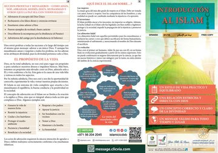
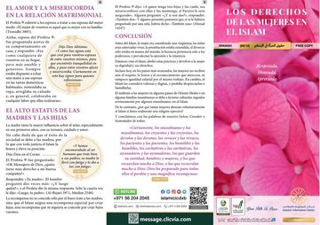

Los milagros científicos del Corán
Folleto de 6 páginas publicado por el Islamic Information Center (Dubái).
SCIENTIFIC MIRACLES
El Corán, el libro del Islam, es el último libro revelado de parte de Dios a la humanidad y el último de la serie de revelaciones concedidas a los profetas. Aunque el Corán (revelado hace más de 1400 años) no es principalmente un libro de ciencia, contiene indicaciones sobre hechos científicos que solo se han descubierto recientemente gracias al avance de la tecnología y el conocimiento científico. El Islam anima a la reflexión y a la investigación científica, porque comprender la naturaleza de la creación permite a las personas apreciar mejor a su Creador y la magnitud de Su poder y sabiduría. El Corán fue revelado en una época en la que la ciencia era primitiva; no había telescopios, microscopios ni nada comparable a la tecnología actual. La gente creía que el sol orbitaba la tierra y que el cielo se sostenía por pilares en las esquinas de una tierra plana. En ese contexto fue revelado el Corán, conteniendo claras indicaciones sobre muchos hechos científicos, en cuanto a temas que van desde la astronomía hasta la biología, la geología y la zoología. Algunas de las muchas verdades científicas que se encuentran en el Corán incluyen: 1 El Origen de la Vida El agua se señala como el origen de toda la vida. Todos los seres vivos están formados por células, y hoy sabemos que las células están compuestas principalmente de agua. Esto se descubrió solo después de la invención del microscopio. En los desiertos de Arabia, sería imposible pensar que alguien pudiera haber adivinado que toda la vida terrestre provenía del agua. 2 Desarrollo Embrionario Humano Dios habla sobre las etapas del desarrollo embrionario del ser humano:
“Creamos al hombre de una esencia de barro. Luego lo colocamos como una gota eyaculada en un lugar firme. Después hicimos de la gota una alaqah [coágulo de sangre], y luego de la alaqah hicimos una mudghah [trozo de carne masticado]...”
Corán 23:12–14
La palabra árabe “alaqah” tiene tres significados: una sanguijuela, una cosa suspendida y un coágulo de sangre. “Mudghah” significa una sustancia masticada. Los científicos en embriología han observado que el uso de estos términos para describir la formación del embrión es preciso y coincide con nuestro entendimiento científico actual del proceso de desarrollo. “E hicimos a partir del agua toda cosa viviente. ¿Acaso no creerán?”
Hasta el siglo XX se sabía muy poco sobre la clasificación y las etapas del desarrollo de los embriones humanos, lo que demuestra que las descripciones del Corán no pueden basarse en el conocimiento científico del siglo VII. 3 Expansión del Universo En una época en que la astronomía era aún primitiva, se reveló el siguiente verso del Corán:
“Y el cielo lo construimos con fuerza, y ciertamente, Nosotros lo expandimos.”
Corán 51:47
Uno de los significados de este verso es que Dios expande el universo (los cielos). Otros significados posibles son que Dios sostiene y tiene poder sobre el universo —lo cual también es cierto—. El hecho de que el universo se esté expandiendo (es decir, que los planetas se alejan entre sí) fue descubierto el siglo pasado. El físico Stephen Hawking escribió en su libro Breve historia del tiempo: “El descubrimiento de que el universo se está expandiendo fue una de las grandes revoluciones intelectuales del siglo XX.” El Corán alude a la expansión del universo mucho antes de la invención del telescopio. 4 El hierro enviado del cielo El hierro no es un elemento natural de la Tierra, ya que llegó a nuestro planeta desde el espacio exterior. Los científicos han descubierto que hace miles de millones de años la Tierra fue golpeada por meteoritos que transportaban hierro procedente de estrellas lejanas que habían explotado. Dios usa la expresión “enviamos”, lo que resulta muy significativo, ya que hay una fuerte opinión científica que sostiene que el hierro llegó a la Tierra a través de meteoritos. Este hecho no podía ser conocido por la ciencia primitiva del siglo VII. 5 La protección del cielo El cielo desempeña un papel crucial en la protección de la Tierra y de sus habitantes contra los rayos mortales del sol, así como del frío extremo del espacio. Dios nos ordena reflexionar sobre el cielo en el siguiente versículo: Dios dice en el Corán: «Y enviamos el hierro, en el cual hay gran fuerza y muchos beneficios para los humanos.»
«Y hemos hecho del cielo un techo protegido, pero ellos se apartan de sus signos.» El Corán señala la función protectora del cielo como un signo del poder de Dios. Estas propiedades protectoras fueron descubiertas por la investigación científica realizada en el siglo XX. 6 Las montañas Dios llama nuestra atención sobre una característica importante de las montañas: El Corán describe con precisión las raíces profundas de las montañas al usar la palabra “estacas”. Por ejemplo, el Monte Everest tiene una altura aproximada de 9 kilómetros sobre la superficie de la Tierra, mientras que su raíz se extiende a más de 125 kilómetros de profundidad. El hecho de que las montañas tengan raíces profundas semejantes a estacas no se conocía hasta el desarrollo de la teoría de las placas tectónicas a principios del siglo XX. Dios también dice en el Corán: «Y colocó en la Tierra montañas firmes para que no se sacudiera con ustedes.» (Corán 16:15) Este fenómeno no comenzó a entenderse científicamente sino hasta tiempos recientes. 7 La órbita del sol En el año 1512, el astrónomo Nicolás Copérnico propuso su teoría de que el sol estaba inmóvil en el centro del sistema solar y que los planetas giraban a su alrededor. Esta creencia se mantuvo entre los astrónomos hasta el siglo XX. Hoy se sabe con certeza que el sol no está quieto, sino que se mueve en una órbita alrededor del centro de nuestra galaxia, la Vía Láctea. «¿Acaso no hicimos de la Tierra un lecho y de las montañas estacas?» El Corán menciona: «Él es quien creó la noche y el día, el sol y la luna; cada uno navega en su órbita.»
8 Las olas internas del océano Antiguamente se pensaba que las olas sólo ocurrían en la superficie del mar. Sin embargo, los oceanógrafos han descubierto que existen olas internas que se producen por debajo de la superficie, invisibles al ojo humano y detectables únicamente con equipos especializados. El Corán dice: «Un mar profundo cubierto por olas, sobre las cuales hay otras olas, sobre las cuales hay nubes; oscuridades, unas sobre otras.» Esta descripción es asombrosa, pues hace 1400 años no existía ningún equipo capaz de detectar estas olas internas en las profundidades del océano. 9 El cerebro y la mentira En la época del Profeta Muhammad ﷺvivía un líder tribal cruel y opresor. Dios reveló un versículo para advertirle: Dios no llama mentiroso al hombre, sino que califica su frente (la parte frontal del cerebro) de mentirosa y pecadora. Numerosos estudios modernos han descubierto que el lóbulo frontal del cerebro es responsable tanto de la mentira como del movimiento voluntario, y por lo tanto, del pecado. Estas funciones fueron descubiertas mediante equipos de imagen médica desarrollados en el siglo XX. 10 Los dos mares que no se mezclan: Sobre los mares, nuestro Creador dice: Una fuerza física llamada tensión superficial impide que las aguas de mares adyacentes se mezclen, debido a sus diferencias de densidad. Es como si existiera una delgada pared que las separa. Este fenómeno ha sido descubierto recientemente por los científicos del océano. «Ha dejado que los dos mares fluyan, encontrándose; entre ellos hay una barrera que no sobrepasan.» «¡No! Si no desiste, le sujetaremos por la frente; una frente mentirosa y pecadora.»
¿Pudo Muhammad haber escrito el Corán? El Profeta Muhammad ﷺera conocido en la historia por ser analfabeto; no sabía leer ni escribir y no había recibido educación en ningún campo que pudiera explicar la precisión científica del Corán. Algunos afirman que copió sus enseñanzas de personas instruidas o sabias de su tiempo. Sin embargo, si hubiera sido así, el Corán también contendría los errores científicos comunes de aquella época. Pero encontramos que el Corán está completamente libre de errores, sean científicos o de otro tipo. Otros sostienen que el Corán fue modificado con el tiempo conforme se descubrieron nuevos hechos científicos, pero esto es imposible, ya que está comprobado históricamente que el Corán se ha preservado en su idioma original árabe —lo cual es en sí mismo un gran milagro. ¿Sólo coincidencia? Aunque este folleto se centra en los milagros científicos, el Corán también contiene otros tipos de milagros confirmados: históricos, proféticos, lingüísticos y literarios, además de su poderoso efecto espiritual sobre las personas. Todos estos milagros no pueden ser producto de la casualidad; son pruebas claras de que el Corán proviene de Dios, el Creador de todas las leyes de la ciencia. Él es el mismo Dios que envió a todos los profetas con un solo mensaje: adorar únicamente a Dios y seguir las enseñanzas de Sus mensajeros. El Corán es un libro de guía que demuestra que Dios no creó al ser humano para que viva sin propósito, sino para alcanzar un fin elevado: reconocer Su perfección, Su grandeza, Su unicidad, y obedecerle. Cada persona está llamada a usar su intelecto y su razón para reflexionar sobre las señales de Dios —siendo el Corán la más importante de todas ellas. Léelo y descubre su belleza y su verdad, para que alcances el éxito. “Les mostraremos Nuestros signos en el universo y en ellos mismos, hasta que les quede claro que esta es la Verdad.”
Islamic Information Center (Dubai) · www.islamicic.com


Folletos para imprimir
 Sonrisa y compasión
Sonrisa y compasiónEspañol
 La mujer en el Islam
La mujer en el IslamEspañol
 La alta moralidad
La alta moralidadEspañol

Introducción al Islam: un estilo de vida práctico y equilibradoEspañol
 El Profeta Muhammad: ¡debes conocer a este hombre!
El Profeta Muhammad: ¡debes conocer a este hombre!Español
 Jesús: un profeta de Dios
Jesús: un profeta de DiosEspañol
 El concepto de la Divinidad en el Islam
El concepto de la Divinidad en el IslamEspañol
 El Corán: la revelación final a la humanidad
El Corán: la revelación final a la humanidadEspañol
 ¿Cuál es el propósito de la vida?
¿Cuál es el propósito de la vida?Español
 Conceptos erróneos sobre el Islam
Conceptos erróneos sobre el IslamEspañol

Los derechos de las mujeres en el IslamEspañol
 La muerte y el más allá
La muerte y el más alláEspañol